DeepSeek 分叉树
把你在 DeepSeek 网页里「重新生成 / 重新编辑」丢掉的那些版本，全部摊成一棵树，随时搜、随时翻、随时切回去。
一、安装（只做一次，约 30 秒）
先双击同目录下的 安装-Edge双击加载.cmd，它会自动帮你打开下面两个窗口，然后照着做：
- Edge 扩展页右上角，把 开发人员模式 打开。
- 资源管理器里已经选中了
deepseek-fork-tree这个文件夹 —— 把它整个用鼠标拖到 Edge 扩展页中间空白处。
（拖不动就用按钮：点「加载解压缩的扩展 / 加载扩展」，然后选中这个文件夹。） - Edge 会弹一条确认框，点 添加扩展程序。列表里出现「DeepSeek 分叉树」就装好了。
- 以后更新了代码（比如换了新版本）：回到 Edge 扩展页，找到这张卡片点 ↻ 重新加载，再刷新 DeepSeek 页面 —— 少了这两步，跑的还是旧版。
二、使用
打开 https://chat.deepseek.com，随便点开一条你反复改过的对话。页面右侧会出现一条「分叉树」抽屉。
- 数据是顺手拦截 DeepSeek 自己发的历史接口拿到的。线上实测：页面进对话时那次历史请求常常命中它自己的本地缓存、只回几百字节，所以插件会在页面加载约 3 秒后自动去掉缓存参数、用页面已有的登录态再要一次全量历史（这一步就是「重新抓取」按钮做的事，不用你点）。
- 之后即使 DeepSeek 把某一版覆盖掉、或者你换了设备登录，本机存过的版本也还在 —— 抽屉底部会写明当前数据来自「接口」还是「本地缓存」。
- 快捷键 Alt + D 开合抽屉。0.1.14 起进页面默认是收起的，只在右侧边缘留一个竖排标签，点它也能开；这个标签还能按住贴着屏幕边缘上下拖，位置会被记住。
- 你在对话里当场点「重新生成」或编辑重发时，DeepSeek 是以流式方式回数据的；插件会把流里刚诞生的那一版直接收进树，不用等页面下次加载。
- 点树里任意一版，再点详情里的「切到这一版」，页面会跳到这一版所在的那条分支：插件从最上面一轮往下逐轮核对，只对不上的那一轮去点 DeepSeek 自己的
‹ 2/3 ›版本按钮，切完自动滚动定位 —— 连被编辑掉的那版提问带出来的整条支线都能拉回来。它只点 DeepSeek 自己的按钮，不发任何写请求。 - 抽屉左边缘可以拖动改宽度，宽度会被记住。
- 树区像思维导图一样：按住拖动平移（画布空白处或节点上都能按），滚轮直接缩放（以光标所在位置为锚点，Ctrl + 滚轮同理），右下角 − ％ ＋ 也行。缩放不设上下限；缩到 20% 以下自动进全景模式：网点背景和已经读不清的文字都撤掉，只留节点色块和分叉线，整棵树塞得进画面时还会自动居中。0.1.9 起，树很大时缩放的下限会自动放低（按"整棵树刚好装进画面"算），所以几百个节点的会话也能一路滚到看全貌。拖过之后再点节点才会打开详情 —— 半途的拖动不会被误当成点击。
- 抽屉打开时默认 100%（字最清楚的大小），不再为了"一次看全"而自动缩小：实测节点正文只有 11.5px，一缩到 50% 就只剩 5.75px，中文直接糊成一团。所以装不下的部分靠拖，要看整棵树的形状就滚轮往下缩。
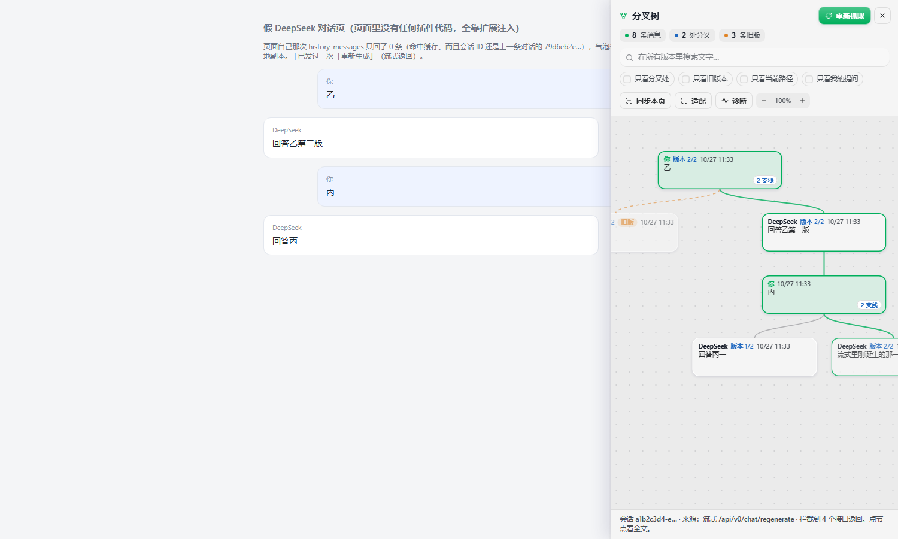
（左边是对话页，右边是抽屉。这张图拍的是本地验证页，抽屉本身和你在 DeepSeek 上看到的完全一样；抽屉配色跟着 DeepSeek 的明暗主题走。注意这张是100% 原大小拍的：树比抽屉宽是常态，所以最右边那一支在画面外、左边那个「旧版」节点只露出半截 —— 按住画布拖一下就转到它，见下面「拖动」那张；想一次看全形状就滚轮往下缩，见「滚轮」那张。）
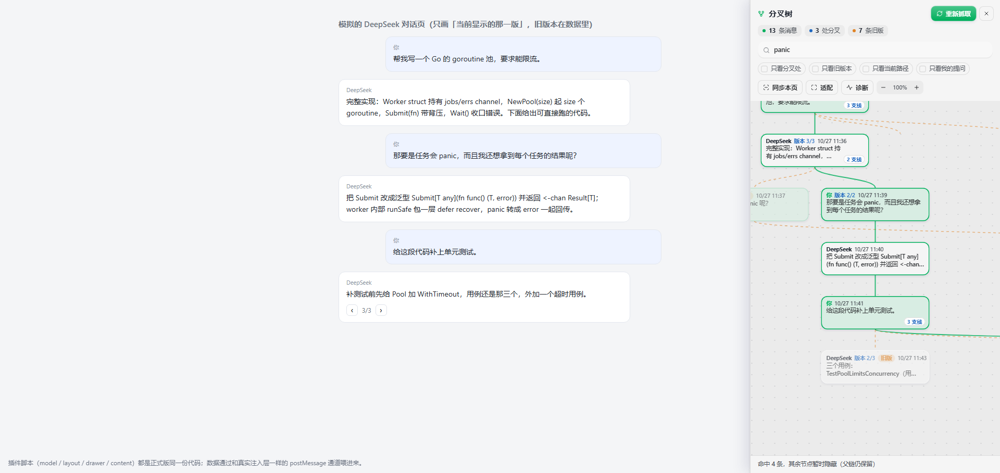
panic 命中 4 条，状态条写着「命中 4 条」。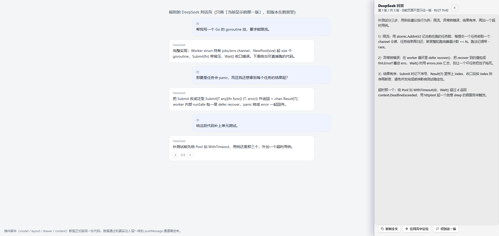
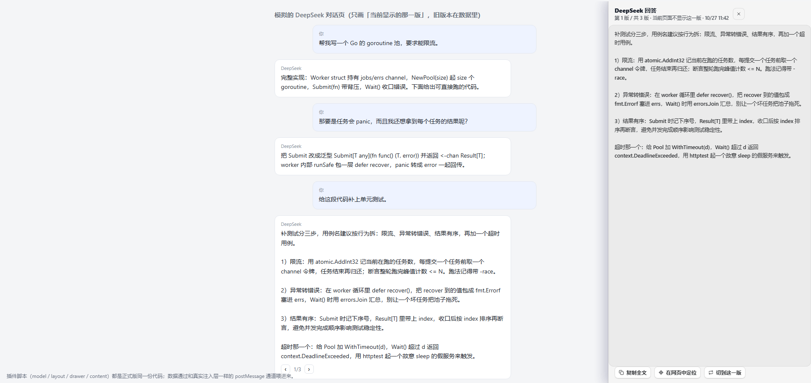
‹ 2/3 › 版本按钮，把左侧气泡真的换成那一版，然后滚动定位高亮。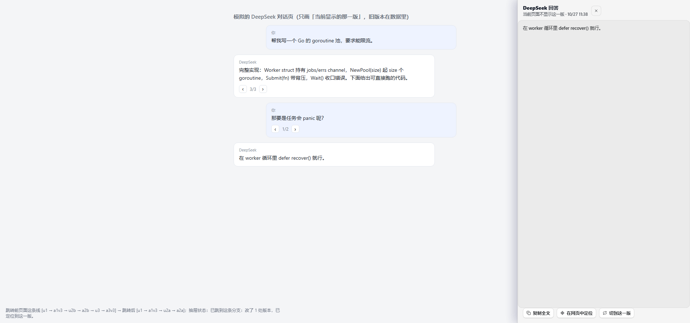
u1 → a1v3 → u2b → a2b → u3 → a3v3，我在树里点了旧支线上的回答 a2a（它挂在被编辑掉的那版提问下面），插件从最上面一轮往下逐轮核对、把对不上的那一轮点 DeepSeek 的版本按钮切过去，页面就变成了 u1 → a1v3 → u2a → a2a —— 连那版已经被删掉的原提问也一起回来了（它自己带 ‹ 1/2 ›）。两种情况会说实话：DeepSeek 万一换版本时不重渲染下面这条线，状态条写「已把 N 处版本切过去，但这一版自己的气泡页面没画出来」；找不到版本按钮就写「找不到版本切换按钮」——都不会假装成功。跳完之后树上的「旧版」标记会立刻按新路径重算（只有页面确认停在这一版时才改），不用等下一次抓取。
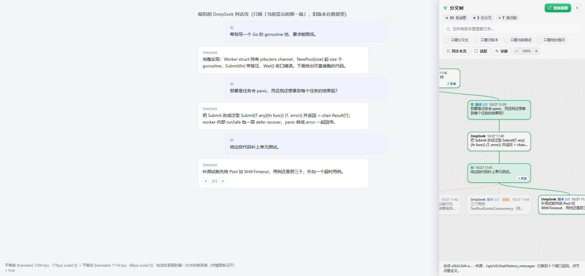
translate(−1304.5px, −178px) → 平移后 translate(−1114.5px, −88px)，位移正好等于鼠标走的 (+190, +90) —— 一比一跟着手走，字还是 100% 的清晰度；紧跟其后的第一次点击被吞掉，详情面板没开，所以「拖完顺手点一下节点」不会被误判成平移。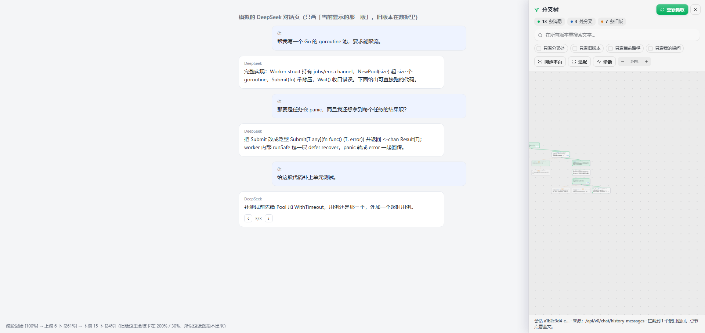
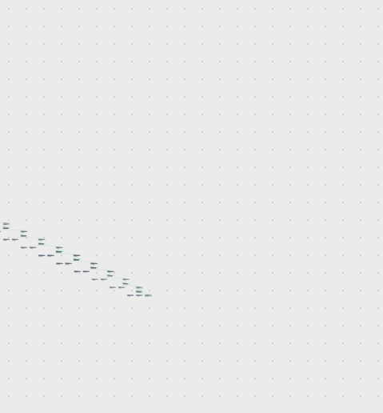
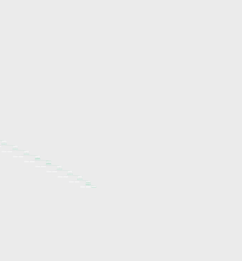
node dev/cdp-zoomab.js 5 big=20（只改内存里的样式，不动产品文件）。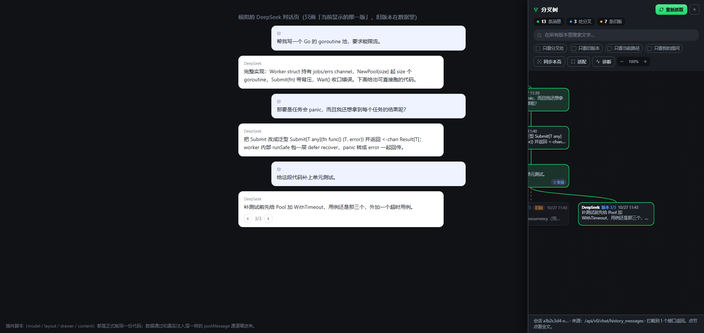
三、抽屉上的按钮
| 按钮 | 做什么 |
|---|---|
| 重新抓取 | 把页面自己那次历史请求去掉缓存参数、加上 show_all=true 再发一遍，用的是 DeepSeek 页面自己的登录态。页面加载后插件已自动做过一次，这个按钮用于你手动重试；失败会在底部说明原因。 |
| 同步本页 | 把当前页面上显示的气泡并进树里。接口结构万一改了、或你刚生成完还没刷新时，用它兜底。用这种方式加进来的节点会标「仅页面」，父节点位置可能不准。 |
| 适配 | 回到 100%（字最清楚的大小）并把镜头移到当前这条线的最新一版。它不再自动缩小 —— 树比抽屉宽是常态，装不下的部分按住拖；要一次看全树的形状就滚轮往下缩。 |
| − 百分比 ＋ | 缩放画布，没有上下限（滚一下约 ±17%，按钮一次 1.2 倍）。缩放时保持你正盯着的位置不动：滚轮以光标为锚点，按钮以画布中心为锚点。百分比只是显示用的，实际缩放是连续的；小于 10% 时带一位小数、小于 1% 时带两位，不会显示成「0%」。 |
| 诊断 | 复制一段纯文本的运行情况（抓到哪些接口、各多少字节、返回的结构骨架、页面气泡数、鉴权头名字）。只含结构和长度，不含你的聊天内容。插件出问题就把这个粘给我。 |
| 在网页中定位 / 切到这一版 | 前者只滚动高亮，不动页面；后者按轮次去点 DeepSeek 自己的版本切换按钮，把页面上整条线换成这一版所在的那条分支（对不上的那一轮才点，已经对的跳过），点完再滚动定位。切不过去时会讲清楚卡在第几处、为什么。 |
| 四个勾选框 | 只看分叉处（只显示重新生成/重新编辑出来的那几处）、只看旧版本（页面上已经看不到的）、只看当前路径、只看我的提问。可以叠加，随时取消恢复。 |
右键快捷菜单（0.1.11 起）
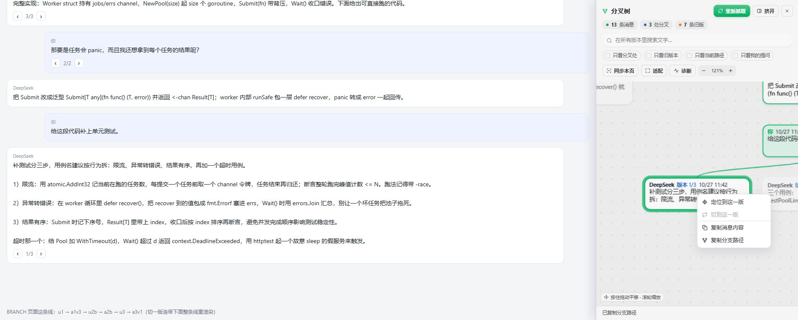
你：修改1 → DeepSeek：重新生成1 → …）。Esc、点菜单外、滚轮、拖动画布或抽屉重渲染都会收起菜单。这张图是验证脚本用真实鼠标右键拍的（同轮还断言了四项文字、置灰规则、复制内容和两种关闭方式）。长对话切旧版：先滚出历史再切（0.1.12 起）
线上实测：一个 22 条消息的会话，页面 DOM 里只保留最近 6 个气泡，更早的消息会被虚拟滚动卸载。之前点很早的旧版节点，插件在第 1 处就报「这一处页面上找不到气泡（可能已被 DeepSeek 卸载）」然后停下 —— 不是按钮找错了，是那一轮根本还没渲染出来。
0.1.12 起，找不到气泡时先沿消息列表双向分步滚动加载（最多 24 轮，以上滚为主；一次按视口高度滚一段，贴边后再顶一下，虚拟列表才会继续取历史；顶部如果有「加载更多 / 查看更早」按钮也会点它，哈希类名的 div 也认得出来），每轮重新扫描一次。判断「到底有没有滚动」不再只看气泡数量 —— 虚拟列表里数量恒为 6，只看数量会把「换了一批内容」误判成「没滚动」而提前放弃；现在改看窗口首尾气泡的文字有没有变。气泡文字对位也改成「先规范化再打分」（消掉「已深度思考（用时…）」「复制 / 重新生成」和 markdown 符号），翻页器再多一条「标签附近三层内 cursor:pointer 元素」的线索，点之前先把按钮滚进视口。
验证：新加的 dev/mock-virtual.html 复刻了线上形态（23 条消息、页面一次只渲染 6 个气泡、翻页器是哈希类名的普通 div），node dev/cdp-virtual.js 用真实鼠标点第 2 轮的旧版节点：插件自己往上滚了 3 次把历史加载出来，找到 2 / 2 翻页器并切回 1 / 2，页面这条线变成 u1 → a1 → u2 → a2v1，状态条「已跳到这条分支：改了 1 处版本」，树上的旧版标记也同步翻过去。
长会话的本地缓存与去重（0.1.13 起）
线上实测有一条 698 条消息的会话，本地缓存原来只留最近 400 条：一旦这次重新抓取失败（断网、接口变动），树里就会丢掉最早的历史，断链的节点还会单独成组。0.1.13 把上限提到 1000 条；写缓存遇到浏览器配额不足时，先让别的会话的缓存腾地方，再退到「只存正文前 2000 字、保留全部结构」，最后才只留最近 300 条——不会再静默地一直存不进去。
另外，「同步本页」把页面气泡并进树时，原来只按前 160 字精确比对；渲染后的文字和接口原文常差在 markdown 符号、思考提示、底部按钮上，于是同一条消息会被重复收进树（诊断里 9 个 unknown 角色节点就是这么来的）。0.1.13 改成先规范化再按分数认，分数 ≥ 0.86 就认为已在树里，不再新增。
还有一处更隐蔽的：自动重抓原来判断「本地缓存里有没有节点」，可缓存一恢复节点就非空，于是再也不会自动重抓——页面自己那次 history 命中缓存空包时，树会一直停在旧缓存上，多设备新增的消息看不到。0.1.13 改成看「页面自己这次 history 请求有没有真给消息」，只给几百字节缓存空包就照常自动重抓一次。
先收起、标签随手放、展开可挤开页面（0.1.14 起）
进页面默认折叠，只在屏幕右侧留一个竖排的「分叉树」标签，不再一进对话就占掉半屏；点标签或 Alt+D 展开。
这个标签可以按住上下拖，贴着屏幕右边缘挪到你顺手的位置，位置会被记住，刷新后还在原处；拖完松手那一下不会顺手把抽屉展开。
折叠时，抽屉左边缘那条改宽度的拖拽带会一起失效 —— 原来它虽然看不见，但仍旧会响应鼠标，在页面中间凭空出现一条「双向箭头」还一按就改宽度，现在不会了。
展开后有两种铺开方式，用标题栏的「挤开 / 浮层」按钮切换，选择会被记住：挤开（默认）把页面收窄到抽屉左边，抽屉和对话互不遮挡；浮层是原来的样子，抽屉盖在页面上。拖宽抽屉时，挤开的页面宽度会跟着变；收起后页面立刻恢复原宽。
0.1.16 修了线上「挤不开」：会话页的根层收窄后，里面还套着一层 position:fixed; inset:0，它仍按整个视口算宽度，所以看着像没反应。现在把页面里所有铺满视口的层都封顶到 calc(100vw − 抽屉宽)（我们自己的抽屉子树排除在外），普通文档流页面仍走 html margin 那条路。诊断信息里也新增了 dom.shell：万一还有别的形态，点「诊断」就能看到页面外壳真实的定位/尺寸，不用再猜。
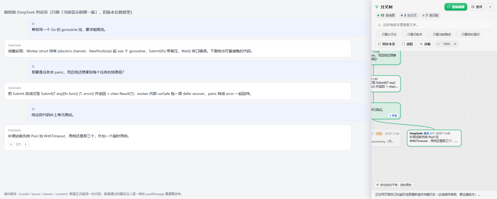
node dev/cdp-shell.js 用真实鼠标跑完四项并截图：默认折叠、折叠时拖拽热区失效、标签下拖 170px 且不被误点开、挤开时页面正好收窄一个抽屉宽度、切回浮层后恢复、刷新后仍记得折叠状态与标签位置；最后把 mock 根层改成 100vw + position:fixed 复刻线上会话页，确认这种 margin 推不动的整屏容器也会被收到 1416px（1896 − 480）。「旧版」是怎么判定的
DeepSeek 的返回里没有「这一版已被顶掉」这样的标记。插件改用页面自己给出的当前消息指针（chat_session.current_message_id）：从它沿着父消息一路往上走，走得到的那些就是你现在看到的这条线，走不到的整条分支（被编辑掉的上一版提问、以及它带出来的回答）才算旧版。所以旧版是推出来的、不是猜的；万一某次返回里指针指向的消息不在其中，插件宁可不标，也不会把正常内容误标成旧版。
四、数据与隐私
- 所有对话内容只写进你这台电脑上 Edge 的扩展本地存储（
chrome.storage.local），不上传任何第三方。 - 插件只在
chat.deepseek.com这一个站点生效，其它网站不注入。 - 它不发多余请求：被动拦截页面自己的返回；外加进入对话后自动补发的那一次历史查询（同域、同 DeepSeek 自己的接口，用页面已有的登录态）。除此之外不碰任何写接口。
- 想清空：Edge 扩展页 → 详情 → 「清除数据」；或直接在 Edge 里卸载扩展。
五、万一不能用
| 现象 | 怎么办 |
|---|---|
| 右侧一直没有抽屉 | 确认地址栏是 chat.deepseek.com（不是 API 站/镜像站）；扩展页里「DeepSeek 分叉树」开关是否打开；按 F5 一次。 |
| 抽屉有，但显示 0 条 | 先等 3 秒（自动重抓在跑）；再点「重新抓取」重试；然后点「诊断」把内容发我——报告里会带上真实接口的结构骨架，我照着改。 |
| 有节点但都标「旧版」或缺 | 说明 DeepSeek 改了字段含义，把「诊断」内容发我，改一处字段表即可。报告里现在会额外给出 currentMessageId（当前指针）、fragTypes（正文分片的类型名）和 emptyText（没抓到正文的节点数），这三项能直接定位问题。 |
| 树里混进了不属于这条对话的内容 | 0.1.4 起只有「带父指针、或角色明确是 user/assistant」的对象才会进树（DeepSeek 的客户端配置返回里也有 id + content，之前被误当成消息）。老版本已经存进本地的那些脏条目，插件加载时会自动清掉并回写，刷新一次页面就干净了；诊断报告里的 pruned 就是这次清掉的条数。 |
| 缩到 5% 以下画布看着崩了（0.1.8 及之前） | 不是渲染坏了，是三处小缩放的账没算：①背景网点的周期定死 22px，而 5% 时一张节点只有 9px 宽 —— 点比节点大，画布读成一片麻点；②平移的边界规则是"至少留 80px 在画面里"，树比画布小的时候就让它歪在一角，看着像丢了；③缩放有个写死的下限 2%，而几百节点的会话要缩到 0.5% 才装得下，于是永远滚不到全景；④百分比按整数显示，1% 以下就成了"0%"。0.1.9 起：网点周期跟着缩放走（8–48px）并且 20% 以下直接关掉，文字也一起隐掉（读不清的文字只会糊成灰渣），整棵树比画布小时自动居中，下限改成按"这棵树刚好装进画面"自动算（大树可滚到 0.5% 以下、小树仍守住 2%），百分比带小数显示。实测：node dev/cdp-zoom.js 3 big=120 滚到下限后 494 张节点全部在画面内、画面外 0 张，标签显示 0.46%。 |
| 点树里任何一版都没反应（0.1.7 及之前） | 这是 0.1.5 加「按住拖动」时带进来的缺陷：画布为了拖动能跟上光标，在按下那一刻就把指针抓走了，浏览器于是把这次的点击改嫁到画布上，节点自己的点击处理根本没跑到 —— 详情面板永远打不开，「切到这一版」自然也点不到。0.1.8 起改成不抢指针（拖动改用挂在窗口上的监听，照样能拖出画布外继续平移），并且用真实鼠标事件复验过：点节点开详情、拖动平移、拖完再点、切分支四步全通过。 |
| 「切到这一版」没反应 / 切到一半停了（0.1.9 及之前） | 翻页器找错了：从消息气泡往上找 ‹ 2/3 › 时一路爬到了整页容器，把隔壁消息的翻页器当成这一条的，点下去页面当然不动（实测停在「第 2/2 处」）。0.1.10 起只在最近的、且只含一个版本标签的祖先容器里配对按钮，并补了一次 hover 重找（有些实现的翻页器要悬停才挂出来）。用真实鼠标复跑：点旧版节点 a2a 后，页面这条线从 u2b → a2b 真的变成 u2a → a2a，状态条显示「已跳到这条分支：改了 1 处版本」；再从那条线点 a3v1，插件跨两轮先把 u2 从 1/2 切到 2/2、再把 a3 从 3/3 连点两次退到 1/3，页面最终停在 u1 → a1v3 → u2b → a2b → u3 → a3v1，状态条显示「改了 2 处版本」，树上的旧版标记也同步翻到新路径。 |
| 「切到第 1/1 处时停了：这一处页面上找不到气泡」（0.1.11 及之前） | 长对话的虚拟滚动：22 条消息的会话，页面只保留最近 6 个气泡，更早的节点被卸载，插件往上滚一次没找到就放弃了。0.1.12 起改成双向滚动加载，并改用「窗口首尾气泡的文字」判断是否真的滚动了（虚拟列表里气泡数恒为 6，只看数量会误判成「没滚动」）；气泡文字改成先规范化再打分，翻页器补了「标签附近三层内 cursor:pointer」这条线索。复刻页 dev/mock-virtual.html 上真鼠标验证通过：插件自己滚了 3 次加载历史，把 2/2 切回 1/2。 |
六、给开发者（可忽略）
目录里 dev/ 是自测用的，删掉不影响插件运行：node dev/test-model.js 跑 108 项解析断言；dev/mock.html 是离线假页面；dev/e2e-build.sh + dev/e2e-server.js 会生成一份只作用于 127.0.0.1:8123 的测试版扩展，用来验证「真扩展注入 + 真 fetch 拦截」这条链路；node dev/cdp-click.js 起一个 headless Edge 用 CDP 真实鼠标事件点抽屉（点节点开详情 → 按住节点拖动平移 → 拖完再点 → 切分支 → 右键菜单四项与置灰/复制/Esc），因为 mock.html 里的 el.click() 合成事件看不见「指针被捕获后 click 改嫁」这类只在真鼠标下发生的失效（这台机器上 9333 已被别的程序占走，三个 CDP 脚本默认用 9343 / 9334 / 9344，要换口用环境变量 DST_CDP_PORT）；小缩放那两个坑用 node dev/cdp-zoom.js [目标%] [big=N] [放大倍数] 量（会先滚到目标、再一直滚到下限，报出"画布外还剩几张"），node dev/cdp-zoomab.js 则在运行时把旧版画布装扮打回去，拍同一缩放的改前／改后两张图 —— 不改产品文件。dev/mock-virtual.html 复刻线上虚拟滚动（23 条消息只渲染 6 个、翻页器哈希类名），node dev/cdp-virtual.js 用真鼠标验「先滚出历史、再切
旧版」这条链路（默认端口 9345）；node dev/cdp-sync.js 连点两次「同步本页」并给气泡加上「已深度思考 / 复制 重新生成」这类渲染差异，
断言节点数不变（默认端口 9346）；node dev/cdp-shell.js 验抽屉外壳四项：默认折叠、折叠时拖拽热区失效、折叠标签下拖 170px、
挤开/浮层切换与刷新后的记忆（默认端口 9347，file:// 没有 chrome.storage，脚本里用 localStorage 做了同语义替身）。